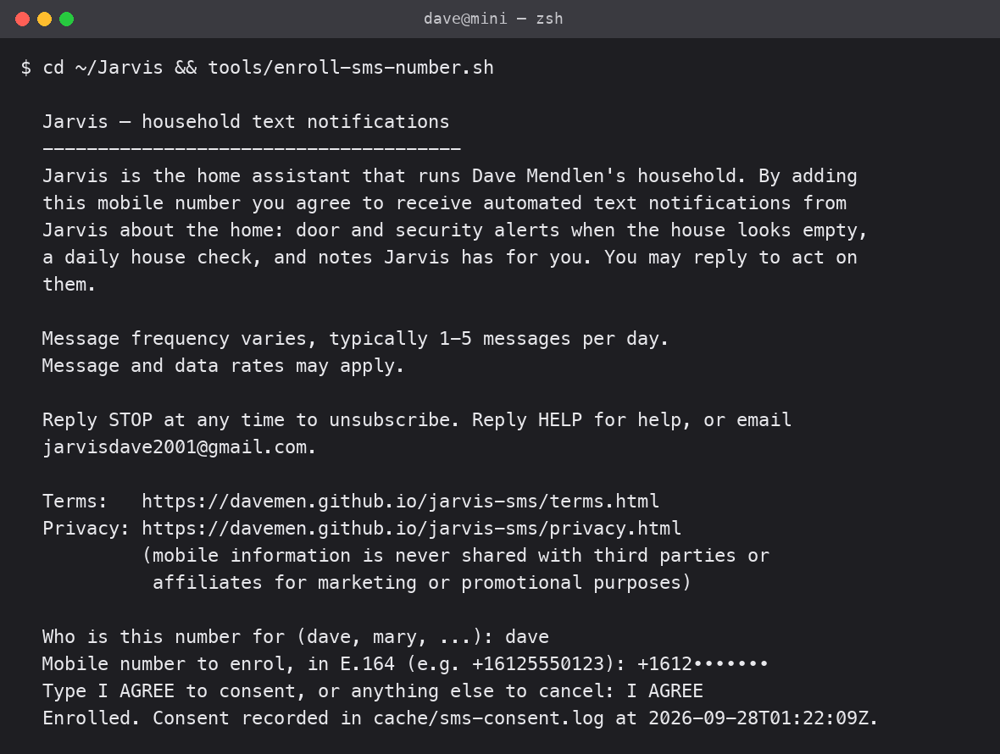

Jarvis household text notifications
Program disclosure for the toll-free number (888) 961-5202, operated by David Mendlen.
Who sends these messages
Jarvis is the home-automation assistant that runs David Mendlen's household in Minneapolis, Minnesota. It is software operated by David Mendlen, a sole proprietor, for his own family. It is not offered to the public, sells nothing, and messages nobody who has not personally enrolled a number as described below.
What is sent
Automated notifications about the home, to the household members who enrolled:
- Door and security alerts when a door opens while the house appears to be empty.
- A daily house check (devices that need attention, doors left unlocked).
- Notes Jarvis has for the recipient, which they may reply to.
Message frequency varies, typically 1–5 messages per day. Message and data rates may apply. Sample messages as actually sent:
Jarvis: the front door opened at 2:14 PM and nobody appears to be home. Reply STOP to unsubscribe, HELP for help.
Jarvis: house check — the kitchen door has been unlocked since 9:40 PM. Reply "lock it" and I will. Reply STOP to unsubscribe.
Jarvis: 3 things I could build for you today. Reply with a number to pick one. Reply STOP to unsubscribe.
How consent is given (the only opt-in path)
There is no web form, keyword, paper form, QR code or advertisement, because these messages are not offered to the public. A household member is enrolled in person, on the household's own server, like this:
- The household member sits at the server and runs the enrollment tool:
cd ~/Jarvis && tools/enroll-sms-number.sh. - The tool displays the notice below in full. Nothing is pre-filled or pre-checked and no number is enrolled by default.
- The person types their own name and their own mobile number in E.164 form.
- The person must type the words I AGREE. Any other answer cancels and nothing is recorded.
- Consent is written to an audit log with a UTC timestamp, the name and the number, and only then is the number added to Jarvis's list of recipients.
The notice, word for word:
Jarvis — household text notifications
Jarvis is the home assistant that runs Dave Mendlen's household. By adding this mobile number you agree to receive automated text notifications from Jarvis about the home: door and security alerts when the house looks empty, a daily house check, and notes Jarvis has for you. You may reply to act on them.
Message frequency varies, typically 1-5 messages per day. Message and data rates may apply.
Reply STOP at any time to unsubscribe. Reply HELP for help, or email jarvisdave2001@gmail.com.
Terms: https://davemen.github.io/jarvis-sms/terms.html
Privacy: https://davemen.github.io/jarvis-sms/privacy.html (mobile information is never shared with third parties or affiliates for marketing or promotional purposes)
What the person sees when enrolling (number redacted):

After enrollment the number receives one confirmation message: "Jarvis: you will now receive household notifications. Reply STOP to unsubscribe, HELP for help."
How to stop
- Reply STOP (or CANCEL, QUIT, UNSUBSCRIBE, END) to any message. Opt-out is honoured automatically and immediately, and the number receives one final confirmation.
- Or ask the operator to run
tools/enroll-sms-number.sh --revoke, which removes the number and logs the revocation. - Reply HELP for help, or email jarvisdave2001@gmail.com.